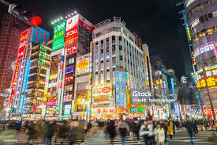
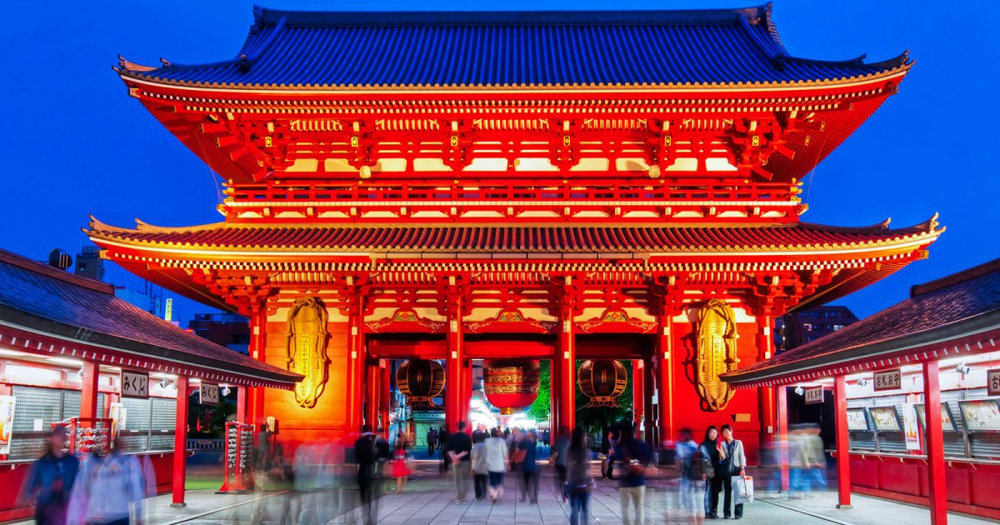
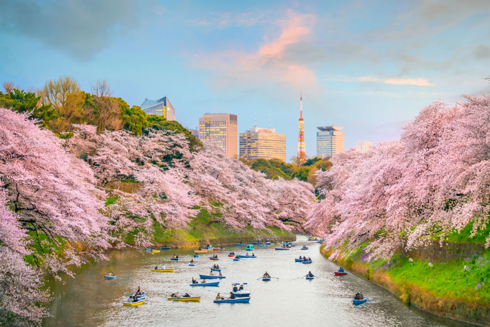

Огни Токио



Токио встретил меня вихрем неоновых огней и невероятной энергией. Этот город - удивительное сочетание древних традиций и футуристических технологий.
Прогулка по району Асакуса привела меня к древнему храму Сэнсо-дзи, где время словно остановилось. Аромат благовоний, звон колоколов и спокойствие среди шумного мегаполиса.
Весеннее цветение сакуры превратило парки в розовое облако. Японцы называют это ханами - традиция любования цветами, которая объединяет всю страну.
Район Сибуя с его знаменитым перекрестком, где одновременно переходят дорогу тысячи людей, показал мне настоящий ритм современного Токио.
Рекомендации для посещения
- Храм Сэнсо-дзи - древнейший храм Токио в районе Асакуса, приходите рано утром.
- Перекресток Сибуя - самый загруженный перекресток в мире, лучший вид со Starbucks напротив.
- Парк Уэно - идеален для ханами (любования сакурой) весной, множество музеев рядом.
- Район Харадзюку - молодежная мода, креативные магазины и кафе.
- Токийская башня - смотровая площадка с панорамным видом на город, особенно красива ночью.
- Рынок Цукидзи - попробуйте свежайшие суши на завтрак!